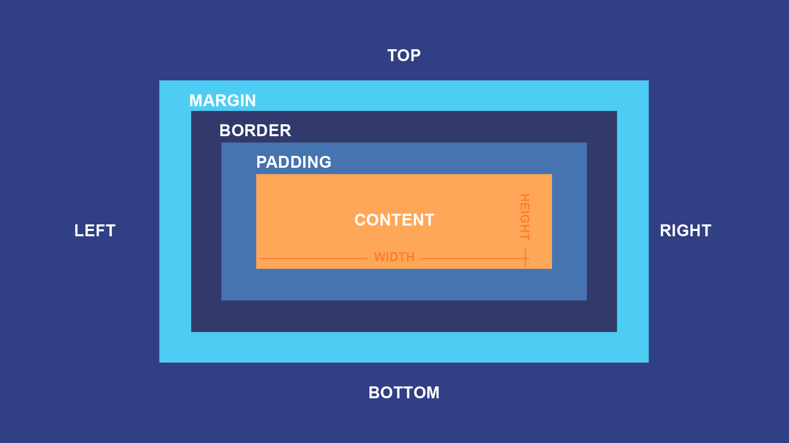
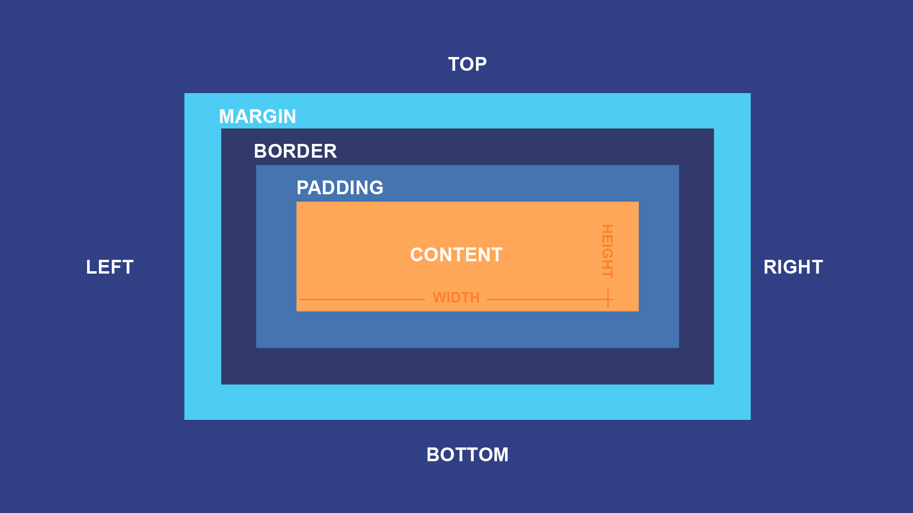

La révolution de l'intelligence artificielle et son impact sur l'avenir des médias et de la programmation
#1
Comment l’intelligence artificielle va-t-elle remodeler la programmation et les technologies de l’information à l’avenir ?
Découvrez des thématiques variées couvrant l’évolution du numérique, l’intelligence artificielle, la cybersécurité, le développement web, les réseaux, et bien plus encore. Ces sujets offrent un regard approfondi sur les tendances et innovations qui transforment notre quotidien et nos métiers.


 
